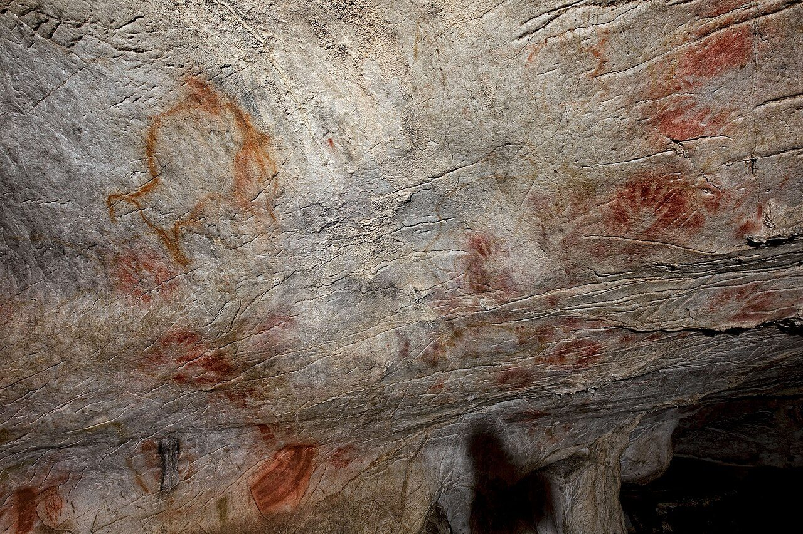

El arte rupestre paleolítico
Criterios: PC 5.1, PC 5.2
🤔 Pienso5 min
Qué hago aquí: Piensa un momento y contesta con lo que ya sabes. No pasa nada si no lo sabes: es para empezar.
Si tuvieras que pintar en una pared de roca, a oscuras, sin pinceles ni pinturas de tienda, ¿qué usarías? Haz una lista.
📖 Leo y aprendo15 min
Qué hago aquí: Lee despacio, mira los dibujos y los ejemplos, y quédate con la idea clave del final.
El arte rupestre es el que se hace sobre la roca de cuevas y abrigos. El del Paleolítico es el arte más antiguo que conocemos, y Cantabria es uno de los lugares del mundo con más cuevas pintadas: más de sesenta.
bisontes, caballos, ciervas, cabras, uros
en negativo: soplando pintura
puntos, rayas, rectángulos
muy pocas y sencillas

Foto: Gabinete de Prensa del Gobierno de Cantabria · CC BY 3.0 es · Panel de manos de la cueva del Castillo.jpg
✏️ Hago25 min
Qué hago aquí: Haz las actividades en orden. Empieza siempre por las básicas.
Explica cómo se hacía cada color y relaciona cada técnica con su resultado: soplado, tamponado, grabado, pintura con pincel.
¿Por qué aprovechaban los bultos de la roca? Explícalo y di qué efecto conseguían.
Expón dos hipótesis sobre el sentido del arte rupestre y escribe, para cada una, una prueba que la apoye y otra que la debilite.
En el arte paleolítico casi no hay figuras humanas ni paisajes, y sí muchos animales. ¿Qué nos puede decir eso sobre lo que era importante para ellos?
Una capa de calcita formada encima de una pintura tiene 40 000 años. ¿La pintura tiene más o menos años? Explica el razonamiento y por qué este método da una edad mínima.
Diferencia entre un hecho y una hipótesis con ejemplos de esta ficha. ¿Por qué en Prehistoria hay que ser tan prudente al interpretar?
Experimenta: con tierra, carbón, agua y un poco de aceite, prepara pintura en dos colores y prueba la técnica del soplado y del tamponado en un papel. Explica qué dificultades tendrías a la luz de una lámpara de grasa.
✏️ Puedes responder escribiendo, con un dibujo o un esquema, o contándolo en voz alta.
🚀 Amplío (si quieres saber más)
Qué hago aquí: ¿Has terminado? Lee la curiosidad o elige el reto. Es voluntario.
Investiga cómo funcionan el carbono 14 y el método uranio-torio. Explica en un esquema qué mide cada uno, por qué el carbono 14 solo sirve para pinturas negras de carbón y por qué el uranio-torio da una edad mínima. Cita las fuentes.
✅ Compruebo5 min
Qué hago aquí: Contesta sin mirar la ficha y marca cómo lo llevas.